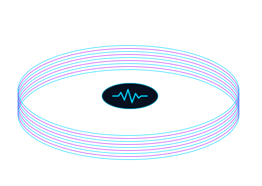

Produção musical
Arranjo, direção e execução orientados à identidade da faixa.
Mirai para artistas
Instrumental, produção vocal, mixagem e masterização para artistas independentes. Rap, trap, drill, funk, geek music e além: referências, não limites.

Rap, trap, drill, funk, geek music e além
Conhecemos a linguagem e a energia desses universos sem transformar gênero em limite. O ponto de partida é sempre o que a música precisa comunicar.
Do primeiro beat ao acabamento. Escolha a parte de que precisa ou construa o conjunto.
Arranjo, direção e execução orientados à identidade da faixa.
Referências, identidade e um instrumental preparado para o lançamento.
Interpretação, takes e edição que valorizam sua voz.
Equilíbrio, espaço e impacto para todos os elementos.
Acabamento e preparação técnica para a entrega.
Entendemos a música, o momento do artista e o resultado esperado.
Definimos serviços, entregas, condições e prazo antes de começar.
O trabalho avança nas etapas previstas, com retorno organizado.
Os arquivos acordados são preparados para o destino do projeto.
Trabalhos publicados
Explore produções e descubra diferentes caminhos sonoros.
Próximo lançamento
Conte o que você está criando. A gente transforma intenção em uma direção sonora clara.
Começar projeto